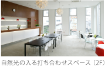

ABOUT US
スタジオライズは平成2年８月に神宮前の小さなスタジオから始めました。
平成17年には代々木上原に神宮前の４倍のスペースを持つスタジオをオープン。
当時では数少ない静物撮影に特化したおしゃれなスタジオとして注目を集めました。
以来「親切、丁寧、リーズナブル」をモットーに、
撮影スタッフのみなさまに愛されるスタジオを目指しています。
RESERVATION
03-5465-0480
ご予約はお電話でのみ承っております